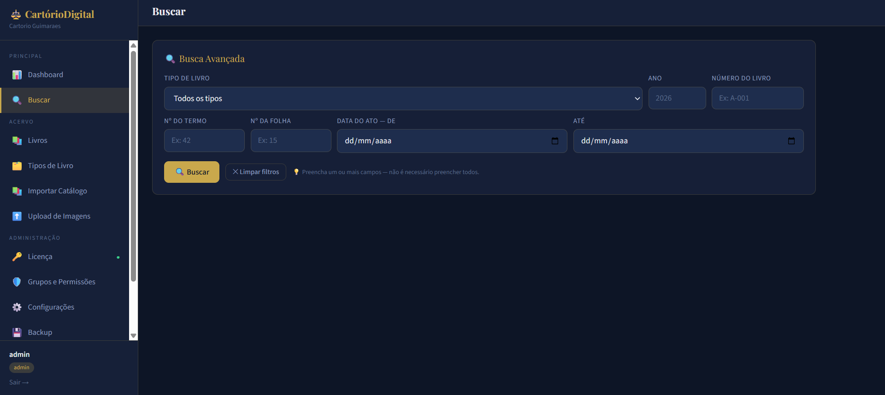
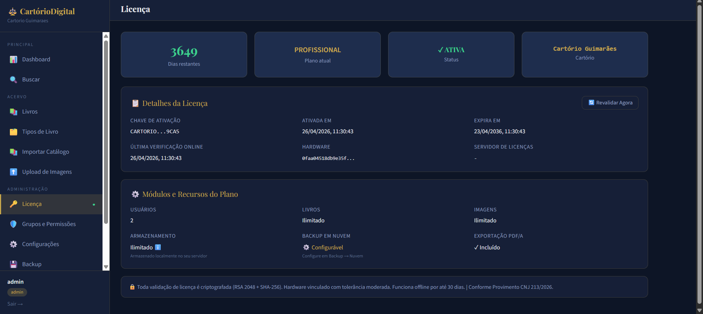
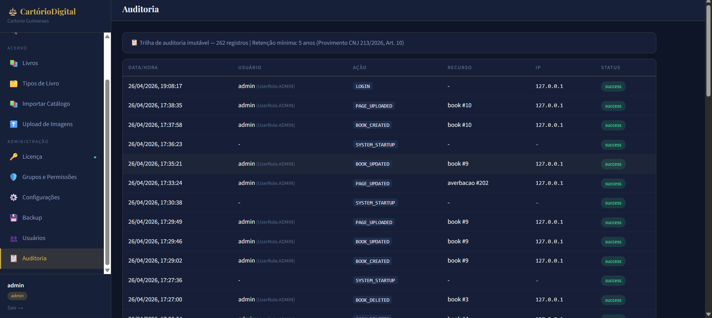
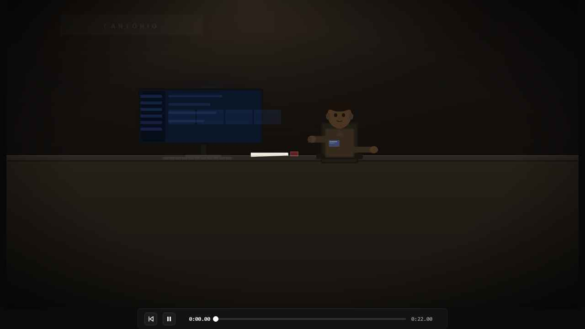

O único software desenvolvido especificamente para atender ao Provimento CNJ 213/2026 desde o primeiro dia de vigência — com instalação local, dados no cartório e backup criptografado na nuvem.




Do livro físico ao acervo digital seguro — em três etapas.
Cada funcionalidade nasceu de uma dor real, vivida por quem trabalhou décadas dentro de uma serventia. Não inventamos necessidades — resolvemos as que já existem.
Envie centenas de imagens de uma vez. O sistema detecta automaticamente frente e verso, número de folha e sequência de termos.
Encontre qualquer ato por tipo de livro, número do termo, folha ou intervalo de datas. Resultado imediato, sem navegar pelo acervo físico.
Cadastro por tipo (Registro de Nascimentos, Casamentos, Óbitos etc.), número, ano e status. Controle de ativação e encerramento de livros.
Backups completos e incrementais programados diariamente. Histórico completo com status de cada execução e restauração com um clique.
Acesso por perfil: serventuário, oficial e fiscal. Cada ação fica registrada no log de auditoria imutável, pronto para fiscalização.
Ativação vinculada ao servidor do cartório. Funciona 100% offline por até 30 dias. Validação criptografada com RSA-2048 + SHA-256.
Não é uma adaptação de sistema genérico. Cada tela e cada regra foi projetada para a realidade da serventia extrajudicial brasileira.
O fluxo completo exigido pelo Decreto 10.278/2020 — automatizado, sem margem para erro.
Projetado para a realidade brasileira: internet instável, estrutura enxuta, equipe pequena. O sistema funciona — independente das condições.
O Cartório Digitalizado roda completamente no servidor local da serventia. A conexão com internet é necessária apenas para revalidação de licença a cada 30 dias — e nada mais. Queda de internet? O sistema continua funcionando normalmente.
Configure o backup automático para a nuvem de sua preferência. Todos os arquivos são criptografados com AES-256 antes de sair do servidor — nem o provedor de nuvem consegue ler seus dados.
Três camadas independentes que protegem o acervo da serventia — em repouso, em trânsito e no acesso.
O Provimento CNJ 213/2026 define parâmetros de recuperação conforme o faturamento semestral da serventia. Atendemos todas as classes.
* Classe 3: backup diário atende na maioria dos casos. Backup incremental adicional disponível para faturamento elevado.
Sem necessidade de servidor dedicado, sem mensalidade de infraestrutura em nuvem. O Cartório Digitalizado instala no próprio computador da serventia com um instalador .exe que configura tudo automaticamente.
Instalador Windows .exe — instala tudo automaticamente: banco de dados, servidor local, interface e serviços de backup. Pronto para usar em minutos.
Publicado em 20 de fevereiro de 2026, o Provimento 213 revogou o Provimento 74/2018 e estabeleceu o mais abrangente conjunto de exigências tecnológicas já imposto pelo CNJ às serventias extrajudiciais — cobrindo segurança da informação, criptografia, backup, auditoria, continuidade operacional e proteção de dados.
O Cartório Digitalizado foi projetado para suprir todas as exigências do Provimento 213 — e vai além, oferecendo recursos que excedem os requisitos mínimos.
Ver texto completo do Provimento 213 no site do CNJ →+ Licença vinculada ao hardware (RSA-2048 + SHA-256), validação offline por 30 dias, segregação lógica de dados por serventia.
"Mais do que um software, o Cartório Digitalizado é uma missão pessoal. Quero que todo cartório brasileiro — grande ou pequeno, delegatário ou interino — tenha acesso a uma ferramenta digna, segura e pensada para a sua realidade."
Cartórios sem delegatário enfrentam uma contradição cruel: são cada vez mais exigidos pelas corregedorias, pelo CNJ e pela lei — mas operam com recursos mínimos, sem investimentos e sem a estabilidade de uma gestão permanente.
A digitalização, manutenção e guarda dos livros não é optativa. É obrigação legal — e o interino ou interventor responde pessoalmente por qualquer falha na preservação do acervo. Não é justo ser cobrado como os grandes quando os recursos são mínimos.
O Cartório Digitalizado é viável para serventias em interinidade. Estamos estudando nossos planos de preço e a premissa é clara: o valor será proporcional ao tamanho da serventia — por número de usuários e máquinas. Grandes e pequenos, cada um paga o que faz sentido para a sua realidade.
Quando necessário, auxiliamos na confecção de requisições ao Juiz Diretor do Foro para autorização da contratação do sistema — tudo em conformidade com o Provimento 93/2020 do TJMG e demais normas estaduais aplicáveis.
Meu nome é Bruno Leonardo Guimarães Brito. Entrei em um cartório extrajudicial aos 13 anos de idade. Dos 18 aos 42, atuei como substituto — conhecendo a fundo cada processo, cada livro, cada demanda da rotina de uma serventia. Hoje sou Juiz de Paz.
Ao longo de décadas, vi de perto uma realidade que poucos fora dos cartórios conhecem: a quase total ausência de softwares feitos especificamente para esse nicho. Ferramentas genéricas que não entendem a lógica dos livros, dos atos, da auditoria, da conformidade com o CNJ.
Vi cartórios de baixa renda sendo cobrados como os grandes. Vi interinos assumindo responsabilidades imensuráveis sem estrutura nenhuma. Vi serventuários dedicados sem ter sequer uma ferramenta decente para digitalizar o acervo que protegem com tanto cuidado.
O Cartório Digitalizado não é só um produto. É uma missão pessoal. Quero que cada cartório do Brasil — dos grandes centros aos pequenos municípios, dos delegatários aos interinos — tenha acesso a uma ferramenta digna, segura e pensada para a sua realidade. Porque conheço essas dores por dentro.
Falar com o Bruno →O prazo para adequação ao Provimento CNJ 213/2026 está em andamento. Não arrisque penalidades — solicite uma demonstração gratuita.